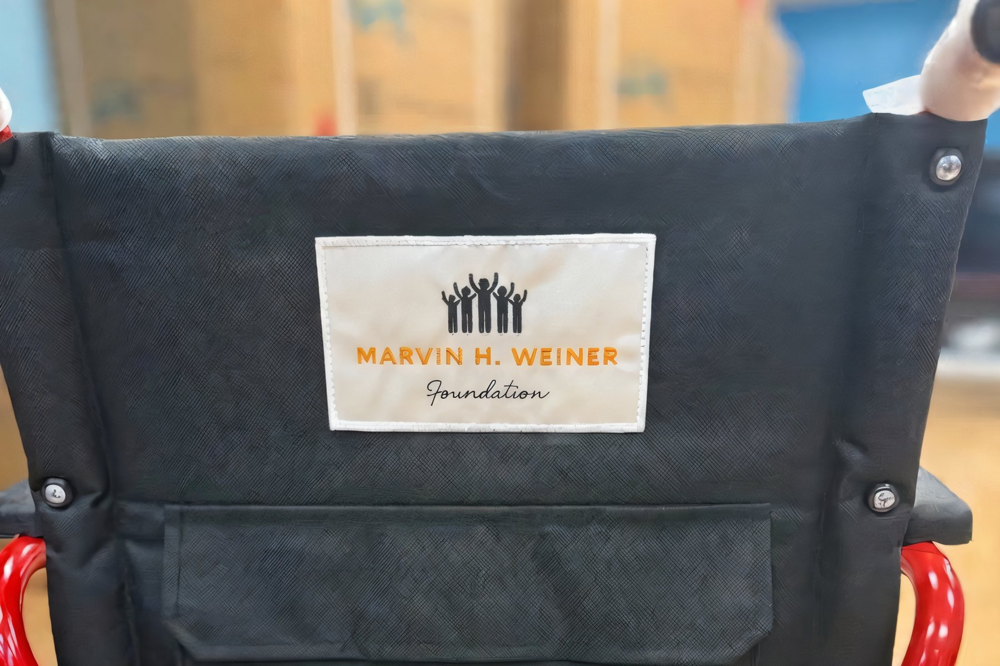

01
Background



Bedside comfort1 / 5Healthcare
Supporting medical research and organizations that bring care to people who could not otherwise afford it — with an emphasis on direct patient impact.